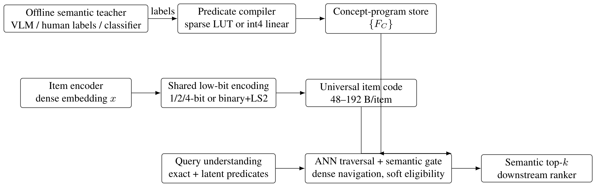
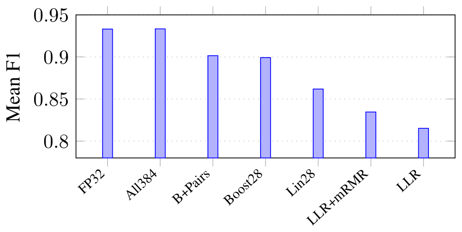
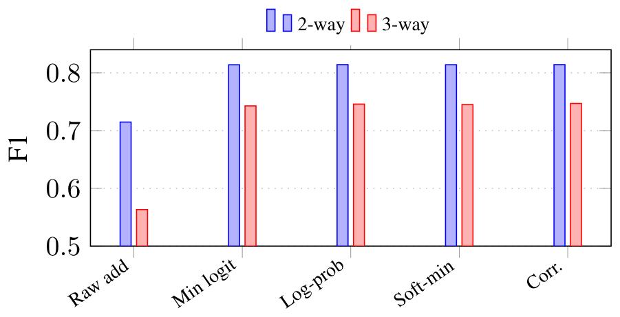
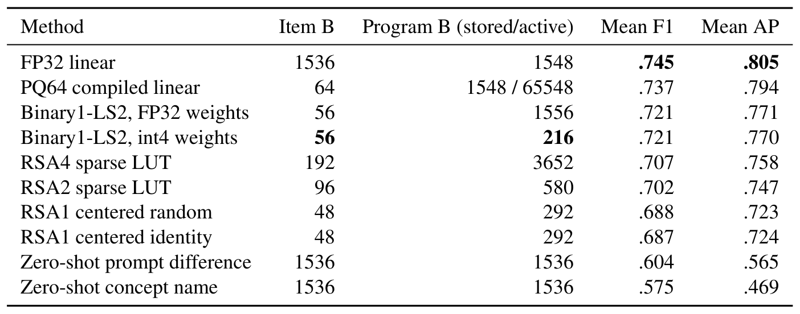
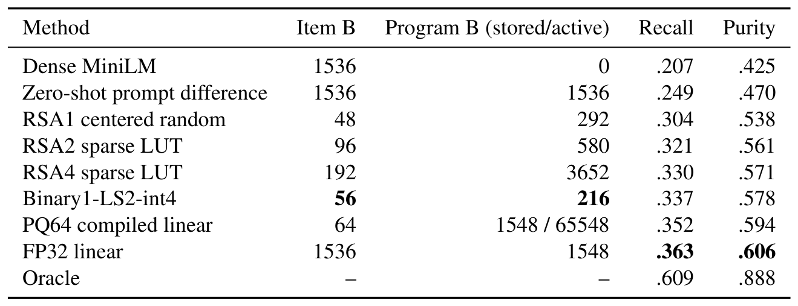
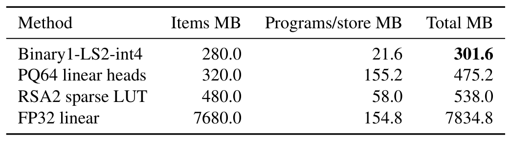
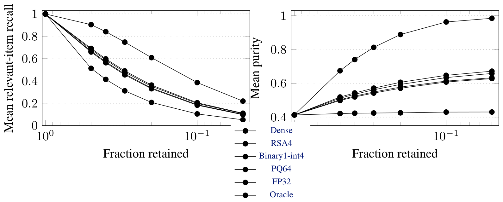
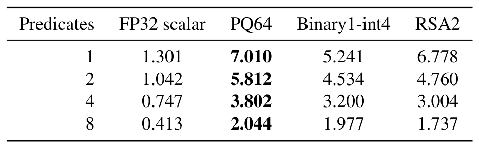
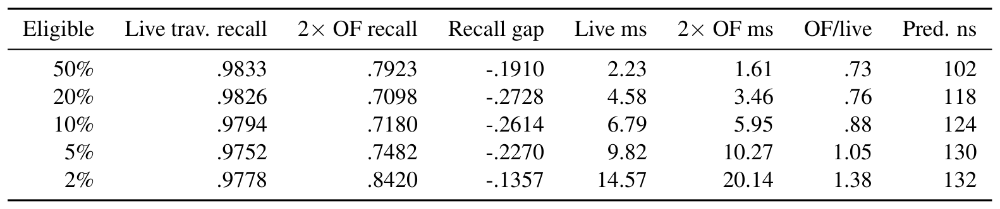
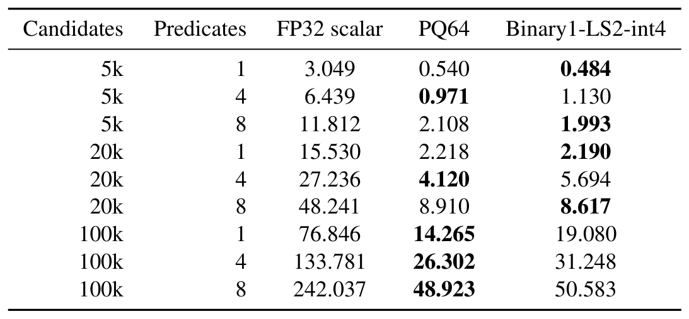

Teal border = selected for the deck. Crops are 4× renders, whitespace-trimmed, otherwise unaltered.
rsa — Search (local; license: author's own)

Figure 1 · p.2 · score 100.0 · SELECTED Figure 1: Compiled semantic execution separates expensive supervision from online search. Exact catalog predicates remain conventional filters. Latent predicates are compiled offline into tiny programs over a shared low-bit item representation and can be evaluated as soft eligibility tests during dense ANN traversal.

Figure 2 · p.6 · score 0.0 Figure 2: Residual-optimized LUTs close most of the gap to the full-precision linear classifier in the original structured-label mechanism benchmark.

Figure 3 · p.6 · score 0.0 Figure 3: Calibration, rather than a complex combination rule, drives the improvement in semantic conjunction.
Table 2 · p.6 · score 0.0 Table 2: Composition of independently learned predicates in the mechanism study.

Table 3 · p.7 · score 0.0 Table 3: Cross-modal predicate quality averaged over three strict splits, with packed storage accounting. For PQ64, the first number is the persistent linear head; the second is the materialized active LUT used by the native executor.

Table 4 · p.7 · score 0.0 Table 4: Main independent-teacher result at 20% retention over 600 query–split cases. Recall and purity are measured within the exact-filtered top-5,000 ANN pool. For PQ64, “stored/active” separates the compact persistent linear head from the materialized lookup table used by the native executor.

Table 5 · p.7 · score 0.0 Table 5: Illustrative persistent semantic payload for 5M items and 100k compiled concepts. Decimal MB; excludes HNSW graph edges and container overhead. PQ64 includes 100k compact linear heads plus one shared float codebook, not one persistent 65.5 KB LUT per concept.

Figure 4 · p.8 · score 100.0 · SELECTED Figure 4: Candidate-budget frontier on the independent-teacher benchmark. Binary1-LS2-int4 is the strongest tiny-program point; PQ64 is the strongest compressed quality point; FP32 remains the best search-side linear proxy.

Table 6 · p.8 · score 0.0 Table 6: Single-threaded native throughput at 100k candidates (million candidates/s). Real held-out rows/programs, 500k resident items, median of five repetitions. The FP32 column is a scalar reference implementation rather than an optimized BLAS baseline.

Table 7 · p.9 · score 100.0 · SELECTED Table 7: Reviewer-controlled live semantic HNSW result. Values are means over three predetermined predicate sets, each evaluated on 1,000 queries. “2× OF” is the largest completed selectivity-aware over-fetch budget, approximately 2K/s. None of the 15 predicate- set/selectivity conditions reaches live recall within 0.005 at any tested over-fetch point.

Table 8 · p.11 · score 0.0 Table 8: Single-thread semantic microkernel latency in milliseconds (median of five repetitions, real held-out rows/programs tiled to 500k resident items). These are not end-to-end search latencies. The FP32 path is a scalar reference implementation rather than optimized BLAS.
acorn — ACORN: Performant and Predicate-Agnostic Search Over Vector Embeddings and Structured Data (2403.04871; license: unknown)
No crops: PDF not available. Wanted: predicate-agnostic search / two-hop neighbor expansion, or recall vs. selectivity